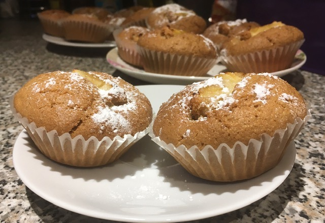

Apple and Almond Cupcakes
Ingredients:
-
250g of Flour
-
150g of Brown Sugar
-
100g of Ground Almonds or Almond Flour
-
1/2 tsp of Baking Powder
-
1/2 tsp of Baking Soda
-
1/2 tsp of Salt
-
200ml of Plant-Based Milk
-
120ml of Sunflower Oil
-
1 tbsp of Apple Cider Vinegar
-
2 tsp of Alomond Extract or Cinnamon
-
1 tsp of Vanilla Extract
-
3 Apples
-
Icing Sugar
-
1/2 tsp of Cinnamon

Method:
-
First, add all of the dry ingredients to the bowl.
-
Add all wet ingredients to a bowl.
Mix them well with a spatula or a wooden spoon until you get a smooth batter.
-
Core and peel the apples. Then cut each apple into 8 slices.
-
Spoon the batter into cupcake moulds (only half full, because the batter will rise). Then place an apple slice into the center of each cupcake
-
Bake in the preheated oven for 20 min.
-
Let them cool down and dust with icing sugar.